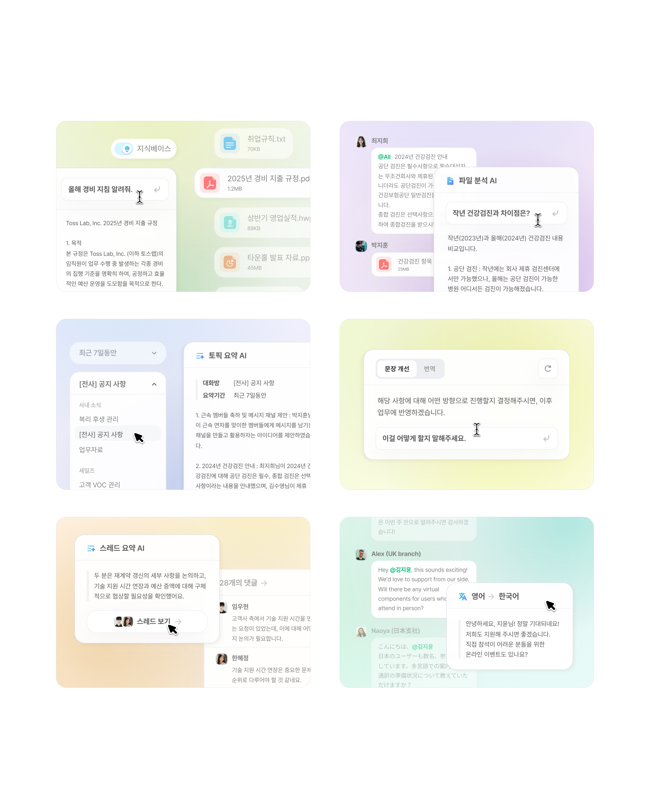
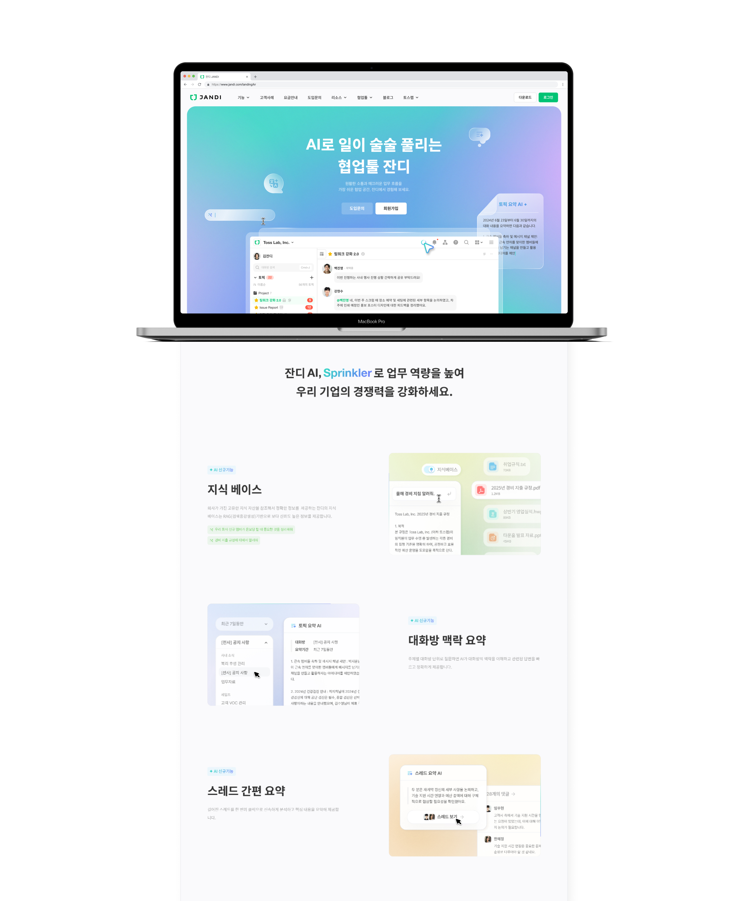
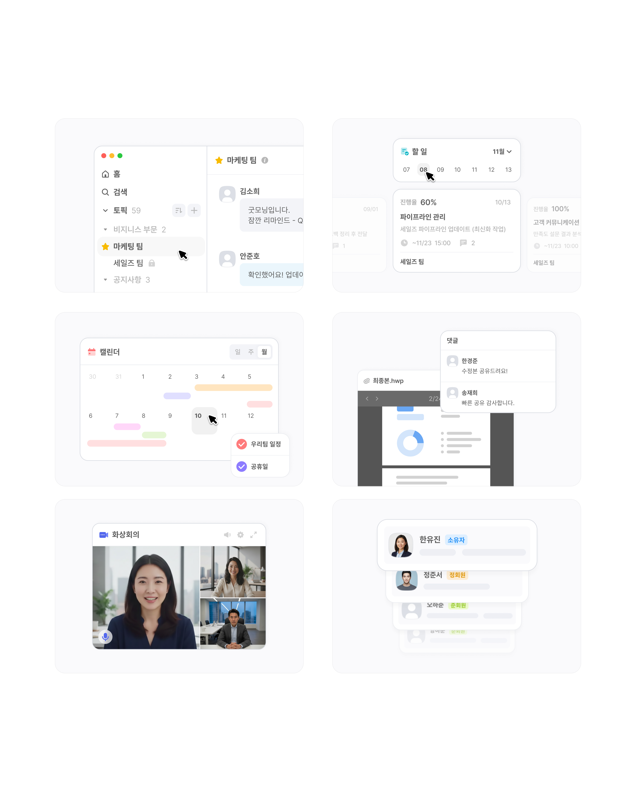
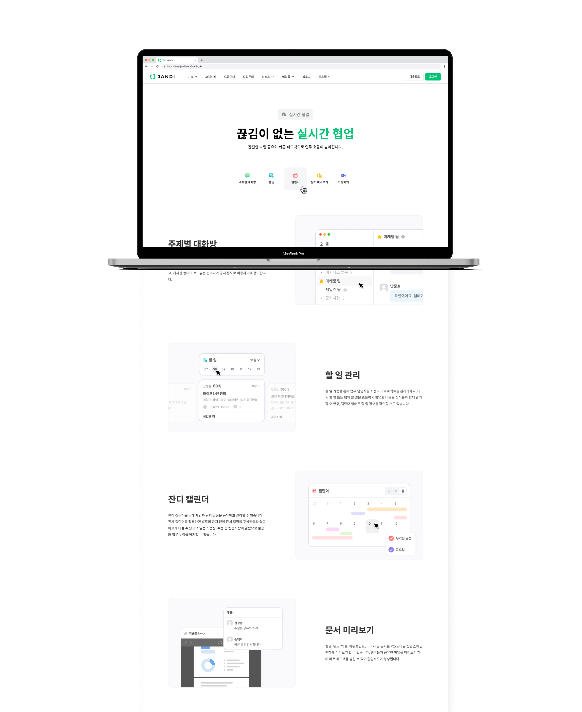
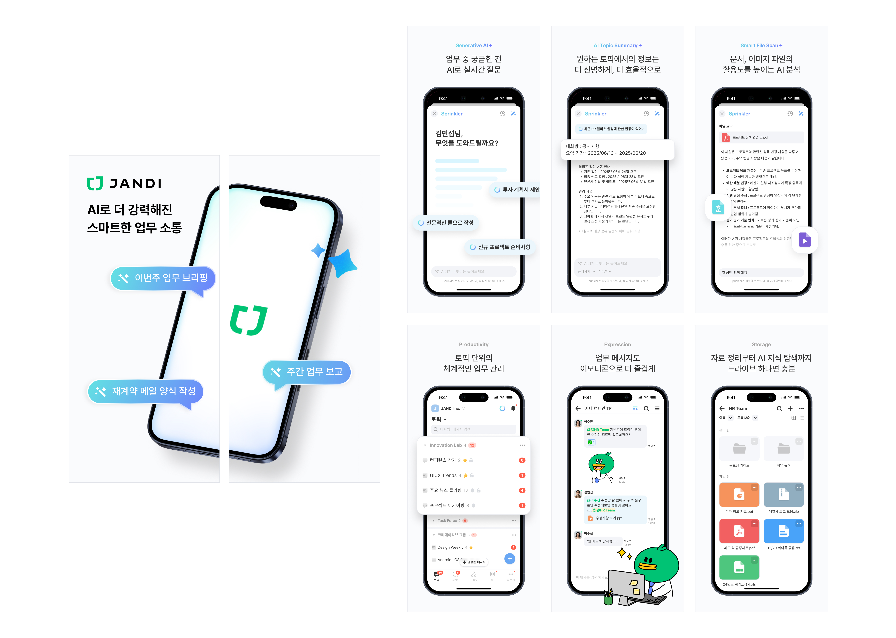
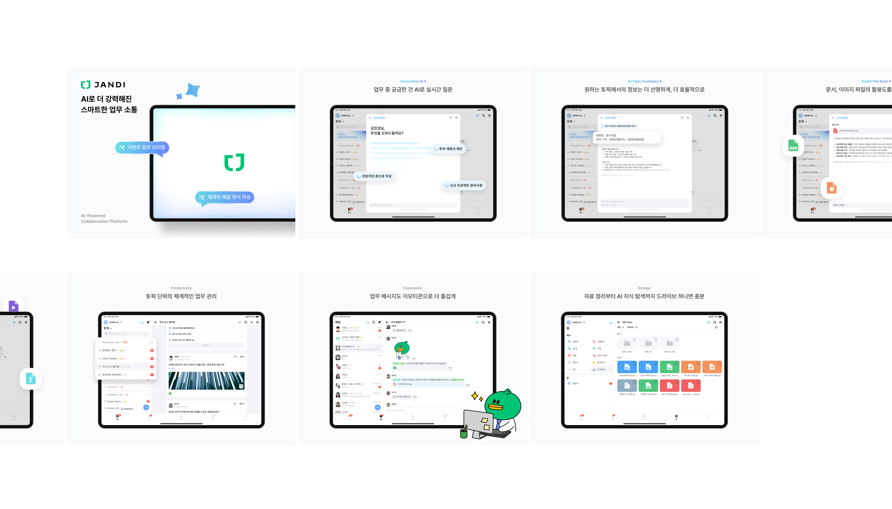
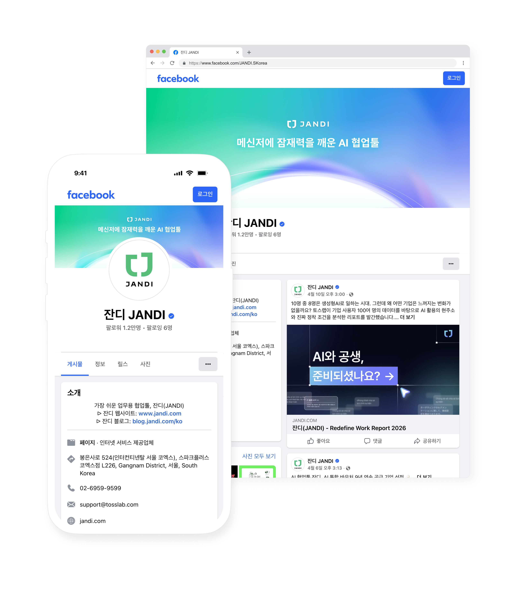
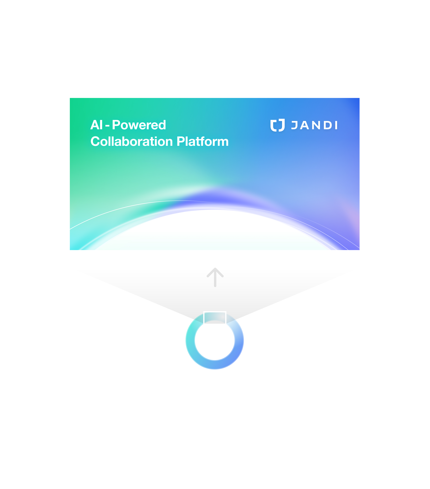

Project
잔디 컨텐츠 디자인
UIUX 프로덕트 디자인을 메인 직무로 담당하면서, 1인 디자이너 환경 특성상 마케팅 컨텐츠 디자인까지 전방위적으로 커버하며 제품이 사용자에게 닿는 모든 접점을 직접 설계하고 실행하였습니다. 이를 통해 프로덕트의 내부 경험은 물론, 브랜드가 외부로 전달되는 방식까지 일관되게 가져갈 수 있었습니다.
Overview
잔디의 새로운 AI 기능을 효과적으로 알리기 위해 웹사이트 비주얼부터 앱 스토어 스크린샷, 소셜 미디어 마케팅 에셋까지 통합적인 컨텐츠 디자인을 진행하였습니다. 단순히 정보를 전달하는 것을 넘어, 기업 고객들에게 잔디가 단순한 메신저를 넘어 '잠재력을 깨우는 AI 협업 플랫폼'이라는 가치를 경험할 수 있도록 브랜드 접점을 강화하였습니다.

Image for website
잔디 웹사이트에 활용되는 기능 소개 이미지를 제작하였습니다. 지식베이스·토픽 요약·스레드 요약·번역 등 AI 기능(Sprinkler)별로 실제 사용 맥락을 담은 UI 컷을 제작하여, 방문자가 기능의 효용을 직관적으로 이해할 수 있도록 하였습니다. 웹사이트 메인 비주얼과도 일관된 톤으로 연결되어 브랜드 경험을 자연스럽게 이어갑니다.


랜딩페이지 메인


랜딩페이지 기능 설명
App Store Screenshots
기존 앱스토어 스크린샷이 협업툴로서의 기능적 강점을 전면에 내세웠던 것과 달리, 이번 리뉴얼에서는 AI 기능을 중심으로 메시지를 재편하였습니다. 실시간 AI 질문 답변, 토픽 요약, 파일 분석 등 Sprinkler AI가 업무 전반에 자연스럽게 녹아드는 모습을 각 화면에 담아, 단순한 소통 도구를 넘어 AI로 업무 역량 자체를 강화해주는 협업 플랫폼으로서의 새로운 포지셔닝을 전달하고자 하였습니다.

Mobile App Screenshot

Tablet App Screenshot
Marketing Assets
Sprinkler AI 로고 상단의 곡선 라인을 디자인 모티프로 활용하여, AI의 유연함과 무한한 확장성을 시각화했습니다. 부드럽게 퍼져나가는 그래디언트 곡선은 잔디와 AI가 결합하여 선사하는 끊임없는 협업의 흐름을 상징합니다.


SNS Cover(좌) / OG Image(우)